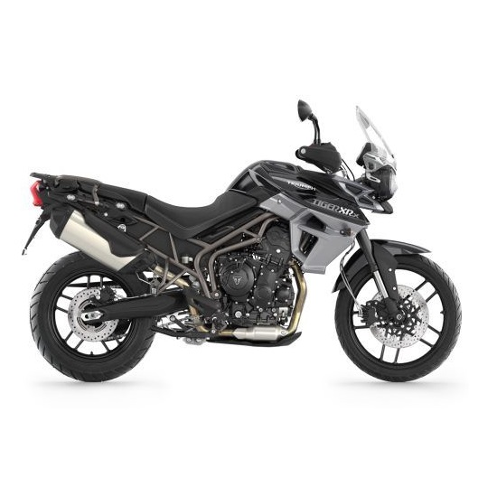
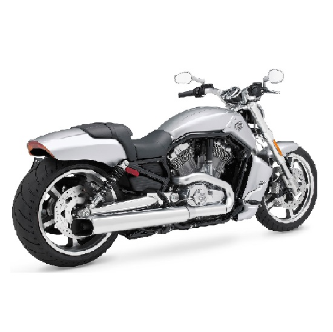
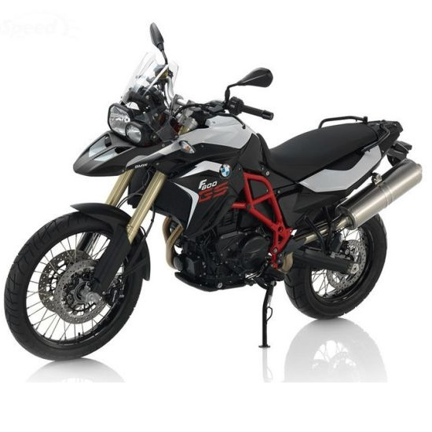

Tiger
800
- Modelo:"Tiger 800",
- Fabricante: "Triumph",
- Ano de Fabricação: 2019,
- Capadidade do Motor: 800,
- Documentação em dia: false,
- Detalhes: "Preto", "Corrente", "Partida Eletrica", "Peso 213 Kg",

V-Rod
- Modelo:"V-Rod",
- Fabricante: "Harley Davidson",
- Ano de Fabricação: 2016,
- Capadidade do Motor: 1250,
- Documentação em dia: true,
- Detalhes: "Prata", "Peso 303", "Baú lateral disponivel"

F800
- Modelo: "F800",
- Fabricante: "BMW",
- Ano de Fabricação: 2015,
- Capadidade do Motor: 798,
- Documentação em dia: true,
- Detalhes: "Azul", "Corrente", "Partida Elétrica", "Peso 207 Kg",